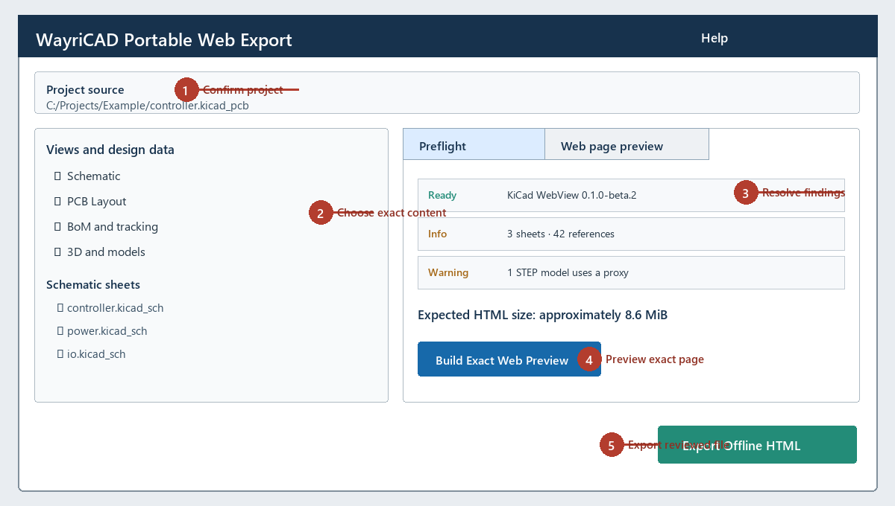

Create one offline interactive HTML document from reviewed project content. The plugin never modifies the KiCad project.

Enable schematic, PCB, BoM tracking and 3D independently. Select exact schematic sheets and supported model files. The PCB source remains complete because subsetting saved board objects would create a misleading derivative design.
| Finding | Resolution |
|---|---|
| Missing model | Fix its saved path or exclude 3D. The viewer shows a labelled proxy. |
| STEP/IGES | Provide an authorized WRL/GLB/GLTF alternative. Portable STEP decoding is not included. |
| Missing viewer distribution | Reinstall the PCM package. Developers may set WAYRICAD_KICAD_WEBVIEW_DIST. |
| Over 64 MiB | Exclude optional model assets or reduce the selection. |
Click Build Exact Web Preview to render the selected self-contained page inside the plugin. This is the same generated document written by export, including its navigation, BoM tracking, source hashes and notices. After export, open the output directly in a supported desktop browser and check every selected sheet, both board views, real linked models, search, component focus, grouped and individual BoM rows, narrow layout, JSON backup and JSON recovery before distribution.
The page header and About dialog show the UTC generation timestamp plus project, revision and document IDs. A machine-readable metadata block records exporter/viewer versions and SHA-256/byte count for every bundled source. The revision ID changes when selected source bytes change; the document ID also distinguishes separately generated files.
Ordering and receiving quantities are distinct from assembly status. DNP and notes are stored per stable component identity. Individual edits save immediately. Group edits require Apply group and confirmation.
Storage is scoped to the project and exact exported revision. Backups from another project are rejected. A different revision is imported only after enabling explicit migration, and only matching stable identities are copied. Browser state never rewrites the HTML file.
The document embeds KiCad WebView under MPL-2.0 plus its source/provenance and dependency notices. It makes no network requests. The export contains design and model bytes; share it only with authorized recipients.
Limit: This is a saved-data review and assembly tracker, not an editable KiCad project, ERC/DRC result, purchasing system, or manufacturing approval.